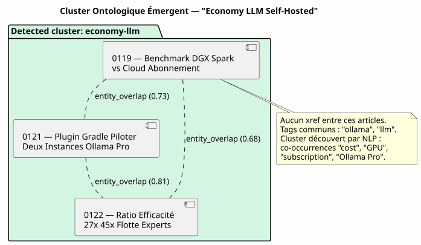

Le Knowledge Graph comme moteur de recommandation : comment j'ai tué les « articles connexes » chronologiques
Published on 12 May 2026
- 1. La Scène : Mardi 12 Mai, 17h30
- 2. Le Diagnostic : Trois Types de Relations Qu’Aucun Template Ne Voit
- 3. La Solution : Un Pipeline Gradle, Pas un Appel LLM à Chaud
- 4. L’Ontologie Émergente : Quand les Articles Se Regroupent Sans Se Connaître
- 5. Le Contrat DAG : Qui Importe Qui
- 6. Ce Qu’on Gagne (Et Ce Qu’on Ne Gagne Pas)
- 7. Perspectives : Le Blog Comme Knowledge Graph Public
- 8. Conclusion : Le Système de Fichiers Sait Ce Que le Template Ignore
- 9. Références
Vous lisez un article sur l’intégration de pgvector avec LangChain4j. En bas de page, JBake vous suggère « Articles connexes ». Vous cliquez. C’est un article sur… la configuration de Kitty Terminal. Le seul point commun entre les deux ? Ils ont été publiés à moins de quinze jours d’écart. Ce n’est pas une recommandation. C’est un calendrier déguisé en éditorial.
1. La Scène : Mardi 12 Mai, 17h30
Je relis un de mes articles — celui sur le Knowledge Graph comme outil de compréhension de codebase.
Le contenu est dense : nœuds, arêtes, communautés, PlantUML, onboarding. Un article
technique de 15 minutes de lecture qui mobilise graphify-gradle, plantuml-gradle,
et les concepts de topologie de graphe.
En bas de page, les « Articles connexes » me proposent :
-
Un article sur Firebase Contact Form (0113)
-
Un article sur le mécanisme Eager/Lazy (0108)
-
Un article sur la migration Gradle script → plugin (0102)
-
Un article sur le cumul d’abonnements Ollama Pro (0120)
Trois de ces quatre articles n’ont aucun rapport avec le Knowledge Graph. Ils sont là parce qu’ils sont les derniers publiés — voisinage temporel, pas voisinage sémantique.
Je regarde le template post.thyme :
<!-- Articles connexes (liens internes SEO) -->
<th:block th:each="post,postStat : ${published_posts}">
<th:block th:if="${!post.uri.equals(content.uri) and postStat.index lt 4}">
...
</th:block>
</th:block>published_posts est une liste chronologique. postStat.index lt 4 prend les
quatre premiers qui ne sont pas le post courant. C’est tout. Aucune logique
de similarité. Aucune notion de contenu. Juste une boucle for déguisée en
recommandation.
|
Ce n’est pas un bug de JBake. C’est le comportement par défaut de tout générateur de site statique : la liste des posts est plate et ordonnée par date. Le template fait ce qu’il peut avec ce qu’il a. |
Mais ce n’est pas une raison pour l’accepter.
2. Le Diagnostic : Trois Types de Relations Qu’Aucun Template Ne Voit
Mon corpus d’articles — 23 posts en 4 mois — a une structure riche que le template chronologique écrase complètement :
-
Références explicites : j’utilise
xref:massivement dans mes articles. L’article 0122 référence 0106 (knowledge graph) et 0116 (compartimentage épistémique). Ces liens sont du hard linking éditorial — j’ai délibérément décidé de connecter ces concepts. -
Tags partagés : chaque article a des
:jbake-tags:. L’article sur Graphify + PlantUML (0105) agradle, graphify, plantuml, knowledge-graph. L’article sur le Knowledge Graph (0106) aknowledge-graph, graphify, plantuml. Trois tags en commun sur sept — 43% de recouvrement. -
Entités nommées co-occurrentes : « pgvector », « RAG », « embedding » apparaissent ensemble dans quatre articles différents. « LangChain4j », « Ollama », « plugin Gradle » dans six autres. Ce ne sont pas des tags déclarés — ce sont des patterns émergents du corpus que seul un NLP peut détecter.
Aujourd’hui, mon site n’utilise aucune de ces trois couches. Il utilise la couche zéro : l’ordre d’insertion dans une liste Java.
3. La Solution : Un Pipeline Gradle, Pas un Appel LLM à Chaud
La première tentation serait d’appeler un LLM au moment du bake : « Pour cet article, trouve les trois articles les plus similaires dans le corpus. » Ne faites pas ça.
|
Un appel LLM à chaque |
La solution est déterministe : un pipeline Gradle qui pré-calcule le graphe
de similarité et le stocke dans graph.json. Le template lit le résultat
— jamais il ne déclenche un calcul.
3.1. L’Architecture : Bakery Importe Graphify, Pas Engine
C’est le point d’architecture le plus important. La tentation serait de
câbler la collaboration dans engine/build.gradle.kts : engine applique
graphify pour le scan, bakery pour le bake, et engine fait le pont entre
les deux.
C’est un anti-pattern. Engine est un terminal consommateur — il applique des plugins, il n’implémente pas de logique métier. La règle est : la charge de la preuve est sur le plugin propriétaire.
Le contrat DAG est respecté : bakery (N2) importe graphify (N0), N2 > N0, aucune violation. Engine (N3) importe bakery (N2), N3 > N2, OK.
Engine n’a aucune ligne de code qui référence graph.json, relatedPosts,
ou toute autre notion de similarité. Il applique bakery, point. La
collaboration est interne à bakery.
3.2. Le Pipeline : Scan → Graphe → Template
Voici le pipeline complet en trois étapes :
-
Scan (graphify) :
graphify-pluginscanne le workspace. Dans sa forme actuelle, il détecte déjà lesxref:entre.adocet les expose dansgraph.jsoncomme des edges de typereference.On l’enrichit pour le contenu éditorial : * Parse les métadonnées JBake (
:jbake-tags:,:jbake-description:) de chaque.adocdu blog * Calcule les co-occurrences de tags → edgestag_cooccurrenceavec poids * Extrait les entités nommées des descriptions via TF-IDF → edgesentity_overlap* Injecte une sectionblog_articlesdans legraph.jsonexistant+
// Extrait de l'enrichissement graphify pour le blog fun enrichBlogSection(graphJson: File, blogDir: File): GraphJson { val articles = blogDir.listFiles { f -> f.extension == "adoc" } .map { parseJbakeMetadata(it) } val nodes = articles.map { ArticleNode(it.slug, it.title, it.tags) } val edges = mutableListOf<GraphEdge>() // Couche 1 : xref (déjà fait par scanWorkspace) // Couche 2 : co-occurrences de tags for (a in articles) { for (b in articles) { if (a.slug == b.slug) continue val common = a.tags.intersect(b.tags) if (common.isNotEmpty()) { edges.add(GraphEdge( source = a.slug, target = b.slug, type = "tag_cooccurrence", weight = common.size.toDouble() / (a.tags.size + b.tags.size) )) } } } return graphJson.copy( blogArticles = BlogSection(nodes, edges) ) } -
Bake (bakery) : au moment du
./gradlew bake,BakeryPluginlitgraph.jsonet résout les articles connexes pour chaque post.// BakeryPlugin — résolution des articles connexes fun resolveRelatedPosts( currentSlug: String, graph: GraphJson, maxResults: Int = 4 ): List<RelatedPost> { val edges = graph.blogArticles.edges .filter { it.source == currentSlug || it.target == currentSlug } return edges .sortedByDescending { it.weight } .take(maxResults) .map { edge -> val relatedSlug = if (edge.source == currentSlug) edge.target else edge.source graph.blogArticles.nodes.first { it.slug == relatedSlug } } } -
Template (
post.thyme) : le modèle JBake reçoit maintenant une map structurée au lieu d’une liste chronologique plate.<!-- Articles connexes basés sur le Knowledge Graph --> <th:block th:if="${relatedPosts != null and !relatedPosts.empty}"> <section class="mt-5 pt-4 border-top"> <h2 class="h4 mb-3">Articles connexes</h2> <th:block th:each="related : ${relatedPosts}"> <div class="mb-2"> <a th:href="${content.rootpath} + ${related.uri}" th:text="${related.title}" class="fw-semibold"></a> <br/> <small class="text-muted"> <th:block th:each="reason,iterStat : ${related.reasons}"> <span class="badge bg-light text-dark" th:text="${reason}"></span> </th:block> </small> </div> </th:block> </section> </th:block>
Le template est le même — il ne sait pas d’où viennent les données.
Seul le contrat entre bakery et JBake a changé : published_posts (liste
chronologique) devient relatedPosts (map pondérée par le graphe).
Le badge « raison » (ex: xref 0122, tag:gradle, cluster:pgvector-rag)
explique au lecteur pourquoi cet article est connexe. Ce n’est pas
juste de la transparence — c’est de la pédagogie sur la topologie de
votre propre contenu.
|
3.3. Fallback Chronologique
Si graph.json est absent (build local sans scan préalable, premier
déploiement, CI qui n’a pas encore intégré le scan graphify), le template
doit dégrader gracieusement :
fun resolveRelatedPosts(currentSlug: String, graph: GraphJson?): List<RelatedPost> {
if (graph != null && graph.blogArticles != null) {
return resolveFromGraph(currentSlug, graph)
}
// Fallback chronologique — même comportement qu'aujourd'hui
logger.warn("[bakery] graph.json absent — fallback chronologique")
return resolveFromChronology(currentSlug)
}Le comportement par défaut est identique au comportement actuel. Le moteur de recommandation est une amélioration progressive — pas un breaking change.
4. L’Ontologie Émergente : Quand les Articles Se Regroupent Sans Se Connaître
La couche la plus intéressante est la troisième : l’ontologie émergente. Des articles qui ne se citent pas, qui n’ont pas les mêmes tags, mais qui parlent de la même chose sans le savoir.
Prenons un exemple concret. Trois articles de mon corpus :
-
0119 — Benchmark DGX Spark vs Cloud Abonnement LLM
-
0121 — Plugin Gradle Piloter Deux Instances Ollama Pro
-
0122 — Ratio Efficacité 27x 45x Flotte Experts IA
Ces trois articles n’ont aucun xref entre eux. Leurs tags ne se recoupent qu’à 20% (« ollama », « llm » communs). Mais un NLP léger sur les descriptions révèle un cluster évident : « coût », « abonnement », « cloud », « GPU », « API key », « Ollama Pro », « efficacité », « ratio ».
Ils forment un cluster ontologique : l’économie du LLM self-hosted vs cloud. Ce cluster n’est déclaré nulle part. Il émerge du corpus.

Ce cluster ontologique devient un edge composite dans graph.json :
{
"source": "0119-benchmark-dgx-spark",
"target": "cluster:economie-llm",
"type": "entity_cluster",
"weight": 0.73,
"metadata": {
"clusterLabel": "Économie LLM Self-Hosted vs Cloud",
"commonEntities": ["coût", "GPU", "abonnement", "Ollama Pro", "ratio"],
"articlesInCluster": [
"0119-benchmark-dgx-spark",
"0121-ollama-pro-deux-instances",
"0122-ratio-efficacite-flotte-experts"
]
}
}Le NLP est volontairement léger — TF-IDF + cosine similarity sur les descriptions. Pas besoin de BERT, pas besoin de modèle de langage. Le corpus fait 23 articles, la matrice de similarité tient dans un fichier JSON de 50 Ko.
|
La puissance du NLP ne vient pas de la sophistication de l’algorithme,
mais de la taille du corpus et de la qualité des descriptions. Une
|
5. Le Contrat DAG : Qui Importe Qui
C’est le point où la discipline architecturale paie. Le DAG N0→N3
défini dans engine/build.gradle.kts donne une règle simple :
aucun projet n’importe un projet de niveau supérieur.
| Plugin consommateur | Plugin importé | Niveau consommateur | Niveau importé | Valide ? |
|---|---|---|---|---|
bakery-gradle |
graphify-gradle |
N2 |
N0 |
✅ N2 > N0 — OK |
engine |
bakery-gradle |
N3 |
N2 |
✅ N3 > N2 — OK |
engine |
graphify-gradle |
N3 |
N0 |
✅ Technique OK, mais conceptuellement faux — la collaboration est interne à bakery |
Engine applique bakery. Bakery applique graphify. C’est tout. Si un jour je veux ajouter le vector store codebase (N1) pour de la recherche sémantique cross-corpus, bakery l’importe aussi. Engine ne change pas.
|
Le pattern est : le plugin N2 est le hub de ses propres dépendances. Engine N3 n’est pas un hub — c’est un terminal qui applique des hubs. |
6. Ce Qu’on Gagne (Et Ce Qu’on Ne Gagne Pas)
Le gain principal est éditorial, pas technique :
| Avant | Après |
|---|---|
Articles connexes = 4 derniers posts |
Articles connexes = top 4 par poids dans le Knowledge Graph |
Lecteur lit du RAG → recommandation Kitty Terminal |
Lecteur lit du RAG → recommandation pgvector, chunking, vector store |
Zéro transparence sur le pourquoi |
Badge |
JBake standard, zéro effort, zéro valeur |
Pipeline Gradle déterministe, reproductible, testable |
Aucune courbe d’apprentissage pour le lecteur |
Le lecteur découvre la topologie de mon contenu |
Ce qu’on ne gagne pas : * Ce n’est pas un « vrai » moteur de recommandation (pas de collaborative filtering, pas d’A/B testing, pas de feedback loop) * La qualité dépend de la richesse des métadonnées JBake — si vos descriptions sont vides, TF-IDF ne voit rien * Le NLP est offline — les nouveaux articles ne sont clusterisés qu’au prochain scan (c’est bien : le build reste déterministe)
7. Perspectives : Le Blog Comme Knowledge Graph Public
Cette fonctionnalité ouvre une perspective plus large : et si cheroliv.com
devenait lui-même un knowledge graph navigable ?
Les articles sont des nœuds. Les tags sont des communautés. Les xref sont des arêtes. Le lecteur ne lit plus un article isolé — il navigue dans un graphe de connaissance dont l’article courant est le point d’entrée.
Imaginez une page d’accueil qui affiche non pas la liste chronologique des derniers posts, mais une carte du corpus : clusters ontologiques, articles pivots (ceux avec le plus d’arêtes), chemins de lecture recommandés (« Si vous avez aimé l’article sur Graphify, lisez ensuite celui sur le Knowledge Graph comme outil de compréhension »).
Ce n’est plus un blog. C’est un atlas sémantique.
Et ce n’est pas de la science-fiction. Le graph.json existe déjà.
Il ne lui manque que l’interface de navigation.
8. Conclusion : Le Système de Fichiers Sait Ce Que le Template Ignore
Ce que j’ai conçu ce mardi soir, c’est le remplacement d’une heuristique paresseuse (l’ordre chronologique) par une représentation fidèle de la structure de mon corpus (le Knowledge Graph).
Le template post.thyme ne change pas. Ce qui change, c’est ce qu’on
lui donne à manger. Avant : une liste Java ordonnée par date. Après :
un graphe pondéré issu de trois couches d’analyse — xrefs, co-occurrences
de tags, et ontologie émergente par NLP.
La boucle est bouclée. graphify scanne le workspace. Bakery lit le graphe et nourrit le template. Le lecteur voit des recommandations pertinentes. Et engine — le chef d’orchestre — ne sait même pas que tout ça existe.
C’est ça, la bonne architecture. Chaque plugin fait une chose. Et le terminal consommateur n’a pas besoin de savoir comment.